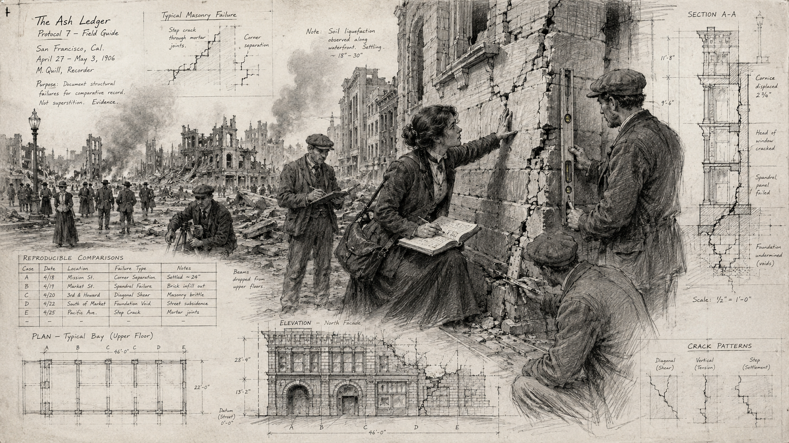
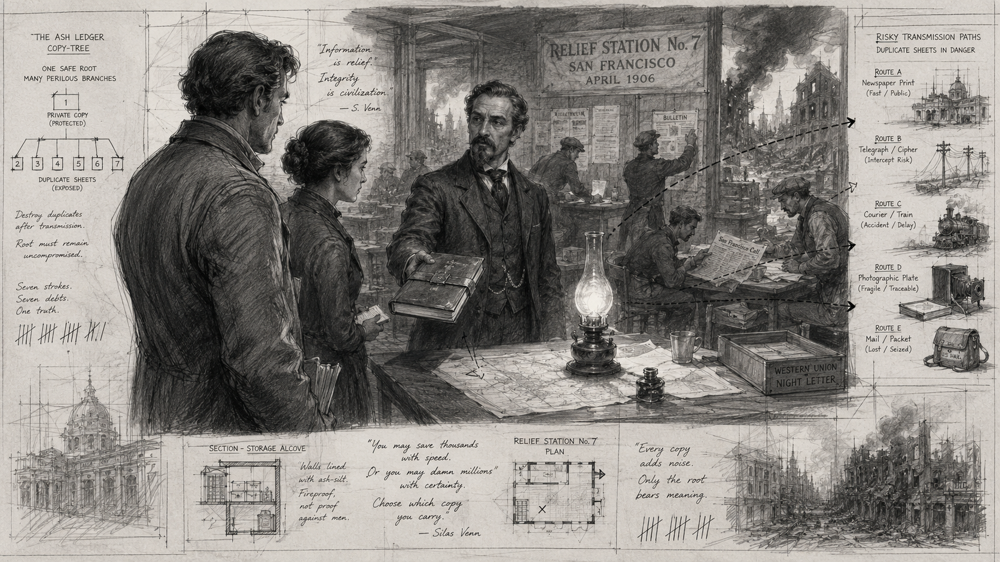

Run This Tonight — The Two-Minute Brief
The story in one paragraph
San Francisco has just been broken open by the 1906 earthquake. Amid
fire, collapsed streets, refugees, and improvised authority,
architectural field surveyor Miriam Quill is recording
something history is about to lose: a practical comparison of why
some ordinary structures survived while nearly identical neighbors
failed. Aletheia knows that the knowledge should have entered the
historical record but did not. The Vectors are not here to stop the
earthquake or “save the city.” They are here to make sure Quill’s
reproducible observations survive independently of Quill herself.
The Covenant also understands the importance of the work and argues
that preserving it helps create the infrastructure that one day
makes Aletheia’s authority possible.
Players begin knowing
A historical discontinuity exists after the earthquake. The
Apocryphon points to a woman with a blue pencil, a ledger,
unstable ground, and a mysterious “third copy.” They do
not know the woman, the exact Carrier, or which
institution matters.
GM must know
Quill is not the Carrier. Her
reproducible observations and method are. Quill can die and
the mission can still succeed. Quill can live and the mission can
still fail.
What makes a good session
The team first thinks this is a search-and-rescue mystery, then
realizes it is a knowledge-preservation mission, and finally has
to decide how aggressively to spread that knowledge without
leaving a temporal fingerprint.
The dramatic question
How much history are the Vectors willing to touch to ensure that
something important survives history?
Five Beats to Remember
Find the blue-pencil trail→Meet Quill→Realize the notes are the Carrier→Choose independent transmission routes→Pay the Exposure cost
GM PriorityIf the table becomes confused,
clarify what they know, not what they should do. The
mystery should be about interpretation and choice, never about
guessing the author’s hidden solution.
Background the GM Can Actually Use
Why this day matters
The earthquake struck before dawn on April 18, 1906. The first shock
was only the beginning. Broken water mains, damaged streets, fires,
refugees, military patrols, relief stations, improvised hospitals, and
collapsing communications created a city where ordinary paperwork
could become more fragile than human memory. For this adventure, that
matters because Quill’s work is exactly the sort of practical,
unglamorous professional knowledge that can disappear in catastrophe.
Who Miriam Quill was before the Vectors arrived
Quill is an architectural drafter and field surveyor employed by a
small insurance-engineering office. For months she has been measuring
settling foundations, recording improvised bracing, comparing masonry
quality, and noting how buildings behaved on difficult ground. Most
supervisors treat the work as claims-support material. Quill thinks it
is more important than that, but she does not yet have the
professional standing to force anyone to listen.
The earthquake gives her the worst possible validation. Structures
only yards apart respond differently. Some cracks confirm her earlier
measurements. Some failures expose weaknesses she suspected. Some
buildings survive because of mundane choices nobody thought worthy of
publication. Quill spends the day moving through danger with a blue
pencil and clothbound ledger because she knows the evidence is
vanishing by the hour.
What baseline history does
Without Vector intervention, Quill returns her notes to an office that
burns before they are properly copied. A few carbon sheets survive out
of context. Quill survives, but the work becomes anecdote. Later
engineers rediscover many individual lessons, yet the specific
comparative method never enters the professional network at the moment
when it could have propagated efficiently.
Why the future notices
Centuries later, Aletheia sees an absence rather than a famous lost
invention: a branch of resilient engineering practice develops late
and unevenly. That delay weakens later traditions of redundant
utilities, shelter design, structural retrofitting, and decentralized
emergency infrastructure. No single 1906 drawing “builds the future.”
The Carrier matters because it changes what later engineers consider
normal to measure, compare, record, and share.
Mission Walkthrough — With Purpose and GM Advice
Scene 1 — Briefing: The Thing That Should Have Survived
Aletheia“The intervention is not the
earthquake. The intervention is what survives it.”
Purpose: Establish that the Vectors are looking for a
continuity node, not trying to prevent a famous disaster.
Give them: The Apocryphon, a period map, plausible cover
identities, extraction time, and the fact that the discontinuity
begins after the earthquake.
If they overthink the prophecyTell them
Aletheia does not expect a perfect interpretation before insertion.
Their job is to turn symbolic hints into testable theories in the
field.
Scene 2 — Insertion: A City Already in Motion
Put the Vectors into immediate human-scale disorder: a damaged
street, injured civilians, smoke, a blocked route, and conflicting
shouted instructions. Give them one problem they can solve without
future technology.
Purpose: Teach the tone and give cover identities social
weight. Helping here earns a later witness or Rourke’s cooperation;
ignoring it is allowed but makes the city feel less willing to help
them.
Read aloudThe street is not ruined so much
as rearranged. Brick lies where sidewalks were. Horses scream behind
a tilted wagon. Someone has painted WATER on a door that no longer
opens. Beyond the roofs, smoke is beginning to become weather.
Scene 3 — Establish Cover: Be Useful Before You Are Believed
The fastest credible covers are surveyors, relief workers, insurance
investigators, medical volunteers, or telegraph technicians. Do not
make this a paperwork minigame. Ask what they do that makes people
accept the role.
Purpose: Convert skills into access and relationships instead
of binary “pass/fail” disguise checks.
Scene 4 — The Blue-Pencil Trail: Three Ways to Find Quill
Offer at least two leads at once: relief camp, damaged insurance
office, telegraph station. Each should provide a clue plus a human
situation. The players can choose their order.
-
Relief camp: A witness remembers “the woman counting
cracks” and her blue book.
-
Insurance office: Recover a message naming M. Quill and
carbon sheets demonstrating her comparative method.
-
Telegraph station: Learn she transmitted measurements to a
lecturer across the bay.
Purpose: Identify Quill and foreshadow that information is
already trying to escape the ledger.
Scene 5 — Meet Miriam Quill: The False Finish Line

Quill records structural failures while the city continues to move
around her.
Quill“If you’re here to drag me somewhere
safe, get in line. If you can hold this level while I write, stay.”
Quill is documenting a visibly unstable structure. She can be
rescued, persuaded, assisted, or angered. Once immediate danger
passes, let her explain her concern in practical terms: the
comparisons are only useful if another trained person can reproduce
them.
Purpose: Let players feel they found the target, then reveal
that “save the woman” is insufficient.
Critical transitionThis is the scene most
likely to determine whether the adventure feels coherent. Before
leaving it, make sure the table understands:
Quill matters because she created the work; the work matters
because it can outlive her.
Scene 6 — Covenant Offer: The Cleaner History

One protected copy—or several dangerous routes into history.
Venn approaches when the Vectors understand the Carrier but before
they have fully Established it. He does not threaten them first. He
offers a compromise: get Quill out alive, keep one private copy,
destroy the rest, and leave history almost exactly as it was.
Silas Venn“You were told this was
restoration. Ask yourself why restoration always seems to produce
the ancestors of Aletheia’s necessities.”
Purpose: Give the campaign question a human voice before
combat can simplify it.
Scene 7 — Build the Carrier: Choose the Transmission Network
Present at least three viable routes. The Vectors need not use all
of them.
| Route |
What it requires |
Why it is attractive |
Risk |
| Halden |
Convince an independent professional the method is reproducible
|
Strong institutional legitimacy |
Slow, cautious, may require demonstration |
| Morrow |
Deliver measurements suitable for technical publication |
Distribution creates resilience |
More witnesses and records |
| Carbon reconstruction |
Organize surviving sheets into coherent method |
Works even if Quill or ledger is lost |
Needs expertise and safe custody |
| Player-created route |
Must be independent, plausible, and reproducible |
Rewards agency |
GM assigns Exposure based on footprint |
Purpose: Turn the mystery into a strategic choice.
Scene 8 — Interference and Disaster: Make Their Choice Expensive
Now escalate. Ellery uses forged orders, route closures, theft, or
surveillance. Fire blocks the easiest path. A civilian emergency
competes with carrier work. If combat happens, it should emerge from
a concrete objective: protect a courier, recover sheets, prevent
destruction, or escape with evidence.
Combat guidanceThe Covenant is not waiting
in a room to be fought. Every hostile action should answer:
What are they trying to stop, steal, delay, or contain?
Scene 9 — Extraction: What Are You Willing to Leave Behind?
At 23:40 the Ferry Building is both destination and pressure cooker.
Crowds, aftershocks, patrols, smoke, and separated routes force a
last accounting. The players should know the Carrier state before
extraction. The remaining question is whether they can leave
cleanly.
Purpose: Separate mission success from temporal cleanliness.
Scene 10 — Verification: The Future Answers, but Not Completely
Aletheia verifies Carrier strength, Exposure, and visible changes.
On successful continuity repair, the seven-stroke mark appears
somewhere it should not exist.
Clean successA line of citations crosses
the display. Quill’s name appears only twice. Her method appears
hundreds of times under other names. “The Carrier persisted,”
Aletheia says. Then the seven-stroke mark appears on a library box
that should not contain it.
Adventure Path Continuity — The Continuance Files
What the path is about
The Continuance Files are not six disconnected historical rescues.
Each operation concerns a different form of continuity:
knowledge, communication, records, technical process, civic
networks, and finally the hidden pattern connecting them. The
Vectors gradually discover that these Carriers improve humanity’s
resilience while also helping produce the institutions and
infrastructure that later make Aletheia’s emergency authority
possible.
Path questionIs Aletheia preserving
humanity’s ability to survive—or preserving the historical conditions
that make Aletheia indispensable?
M01’s job in the campaign: teach the Carrier concept through a
concrete object, then overturn the assumption that the object itself
is what matters. Introduce the Covenant as ideological opposition
rather than simple saboteurs. End with the seven-stroke mark as
evidence that a third actor, process, or layer of history may exist.
| Mission |
Continuity form |
What it should add |
| M01 — The Ash Ledger |
Knowledge |
Carrier concept; Covenant argument; seven-stroke mark. |
| M02 — The Winter Relay |
Communication |
Redundancy vs secrecy; first callback to M01 consequences. |
| M03 — The Paper Harbor |
Records / identity |
Records can save people and expose them. |
| M04 — The Quiet Machine |
Technical process |
Evidence that the mark predates known Vector activity. |
| M05 — The Last Water Map |
Civic network |
Public survival versus temporal cleanliness at scale. |
| M06 — Seven Copies |
Meta-continuity |
Reveal who or what has been creating the seventh route. |
Revision r002 preserves the existing path titles as working
reservations. It expands coherence and GM usability without changing
frozen core mechanics.